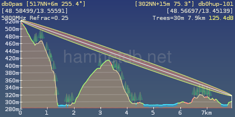
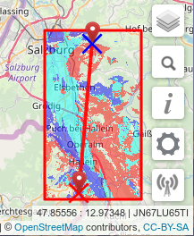
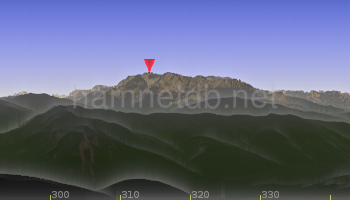

Infos zur Hamnet-DB
Diese Datenbank dient der Dokumentation und Darstellung von IP-Adressen
im Hamnet. Es handelt sich um ein System für Netzwerk-Insider und ist mit
dem ausschließlichen Ziel entstanden, nützlich und hilfreich zu sein.
Die Koordination erfolgt ausschließlich durch die Verantwortlichen, ein
Anspruch auf Vollständigkeit der hier eingegebenen Daten besteht nicht.
Objekte
- Sites (Standorte)
Jedes Stück Hardware steht notgedrungen an einem Ort, so dass die Basis
jeder Komponente der Standort ist. Er hat ein Amateurfunk-Rufzeichen,
Koordinaten und ggf. eine Höhe über Grund.
Letztere ist vor allem zum Berechnen der Sichtline hilfreich.
- Hamnet-site:Standort mit mindestens einer aktiven Hamnet-Komponente.
Nur automatisch arbeitende Amateurfunkstellen mit entsprechender
Rufzeichenzuteilung. Keine persönlichen Rufzeichen.
Keine Clubstationsrufzeichen.
- Special hamnet-site (ignore position in map):
Wie eine "Hamnet-site" nur ohne Beachtung der Koordinaten beim
Zentrieren der Kartenansicht (im Normalfall nicht verwenden).
- ISM-site: Standort mit mindestens einer aktiven Hamnet-Komponente.
Die Anbindung an das Hamnet erfolgt über einen ISM-WLAN-Funklink
mit entsprechenden Parametern.
(im Idealfall ausserhalb des 13-cm-/6-cm-Amateurfunkbandes).
Keine automatisch arbeitenden Amateurfunkstellen.
Als Callsign bitte den verantwortlichen Funkamateur für einen Standort
mit fortlaufender ID ab -101 angeben (z.B. dg8ngn-101, dg8ngn-102, usw.).
Alternativ kann auch direkt ein Rufzeichen angegeben werden,
wenn die Koordinaten zum Standort des Rufzeichens passen
(z.B. persönlicher Standort: dg8ngn, Standort der Clubstation:
dl0abc oder Standort der automatisch arbeitenden Amateurfunkstelle
der Klasse E: do0xyz).
- No hamnet on site (e.g. FM-repeater):
Standort ohne aktiver Hamnet-Komponente.
Nur automatisch arbeitende Amateurfunkstellen mit entsprechender
Rufzeichenzuteilung. Keine persönlichen Rufzeichen.
Keine Clubstationsrufzeichen.
- Site without callsign (for planning):
Zur Linkplanung kann hier ein Standort ohne Rufzeichen eingegeben werden.
Bitte nach der Planungsphase wieder entfernen.
- Hosts (einzelne IP-Adressen)
An einem Standort befinden sich üblicherweise mehrere IP-Adressen, die
für unterschiedliche Zwecke genutzt werden. Grundsätzlich gibt es
zwei Kategorien:
- Routing: Dient für einen anderen Knoten als Gateway,
hat aber i.d.R. sonst keinen Zweck.
-- Type "Routing-Radio": Der Host von Standort A bildet
zusammen mit dem Host von Standort B eine Hamnet-Linkstrecke.
-- Type "Routing-ISM": Der Host von Standort A bildet zusammen mit dem
Host von Standort B eine Hamnet-Linkstrecke im ISM-WLAN-Bereich
mit entsprechenden Parametern.
-- Type "Routing-Ethernet": Der Host von Standort A bildet zusammen mit dem
Host von Standort B eine Hamnet-Linkstrecke im Nahbereich über Ethernet.
-- Type "Routing-Tunnel": Der Host von Standort A bildet zusammen
mit dem Host von Standort B eine Hamnet-Linkstrecke über einen Internet-Tunnel
- Service: Ist als IP ansprechbar, dient aber i.d.R. nicht dem Routing.
Aus den Hostnamen werden u.A. DNS-Zonen generiert.
Aus den Namen im "Aliases"-Feld werden in diesem Fall CNAME-Records.
- Subnets
Um die IP-Adressen herum werden Subnetze definiert.
Sie stehen in einer hierarchischen Beziehung zueinander, d.h. ein kleineres
Netz kann Bestandteil eines größeren Netzes sein.
Auch bei den Subnetzen wird zwischen Routing (Backbone) und Servicenetzen
unterschieden.
Jedes Subnetz ist Bestandteil eines AS und kann ggf. auch ein eigenes
AS definieren.
Die Subnetztypen "AS-Backbone", "AS-User/Services" und "AS-Packet-Radio"
sind in Deutschland den DL IP-Koordinatoren vorenthalten
(Bereiche: 44.130, 44.224, 44.225).
- AS - Autonome Systeme
Fassen jeweils Routingdomänen zusammen. Diese sind nach geographischen
Regionen aufgeteilt, in DL üblicherweise DARC-Distrikte oder Teile davon.
Ein AS hat jeweils mindestens ein AS-Backbone-Subnetz für das Routing
und ein AS-User/Services-Subnetz für die Benutzerzugänge und Dienste.
Verbindungen
In der Regel wird (zumindest in DL) pro Verbindung ein Transport-Subnetz
vom Typ Backbone-Network vergeben. Im einfachsten Fall werden über ein
solches Netz genau zwei Knoten miteinander verbunden (Point-to-Point).
Trifft das zu, ist die Welt recht einfach, die Hamnet-DB erkennt in
diesem Fall automatisch dass es sich um eine Verbindung zwischen
zwei Knoten handelt und stellt die Verbindung in Karte und Tabellen
als solche dar.
Nun gibt es aber immer wieder Fälle, die sich mit obiger Gesetzmäßigkeit
nicht abbilden lassen. Diese sind:
- Point-to-Multipoint Verbindungen. Hier ist aus der Netztopologie
nicht zweifelsfrei erkennbar, wer mit wem konkret spricht.
- Strukturen, die ohne Subnetzbeziehungen auskommen, wie z.B.
OLSR oder Bridging.
In diesen Fällen muss die Verbindung speziell eingetragen werden, weil
sie für die Hamnet-DB aus der Netztopologie nicht automatisch erkennbar
ist. Zu diesem Zweck dient das Objekt Edge.
Eine Edge kann zwischen zwei Sites eingetragen, wenn
- nicht bereits eine Linkbeziehung über ein Transportnetz besteht und
- wenn auf beiden Seiten mindestens ein Host mit IP-Adresse definiert ist.
Sind beide Voraussetungen erfüllt, kann in der Liste "Other sites near..."
unter der Spalte Edge eine neue Verbindung eingefügt werden.
Diese wird dann für Karten- und Tabellendarstellung genutzt.
Referenzen und Abhängigkeiten
Um die gespeicherten Daten so robust wie möglich zu halten, werden nur die
wirklich notwendigen Beziehungen (Referenzen) in der Datenbank gepeichert.
Das führt bei der Eingabe der Daten in manchen Fällen zu unerwartetem Verhalten.
Es gelten folgende Referenzbeziehungen:
- Jeder Host hat genau einen Standort (Site)
- Jedes Subnetz enthält mindestens einen Host
- Jedes Subnetz hat ein übergeordnetes AS
Erst über alle drei Beziehungen kann eine Beziehung zwischen AS und Site
hergestellt werden. So taucht die Site sowohl in der Liste des AS als auch
in dessen Karte erst auf, wenn auch die zugehörigen Hosts und
Subnetze definiert sind.
Eingabefelder für Maintainer und Comment
Bei AS und Site besteht die Möglichkeit, eine Liste von "Kümmerern"
einzutragen. Das sollte eine Komma-separierte Liste von kleingeschriebenen
Rufzeichen sein.
Zusätzlich gibt es überall ein Freitext-Kommentarfeld, das in der
Datenbank keine Längenbegrenzung hat.
Theoretisch kann hier also sehr viel stehen, doch
weniger ist manchmal mehr.
Für beide Felder gilt folgender Grundsatz:
- Die Felder sollten überhaupt nur befüllt werden, wenn es speziell zu
diesem Objekt etwas anzumerken gibt.
Ist alles bereits mit den über- oder untergeordneten Objekten gesagt,
dürfen und sollen diese Felder leer bleiben.
- Stehen ausführliche Informationen bereits an anderweitiger Stelle
und(!) werden sie dort auch gepflegt, dann sollten diese Informationen
nicht kopiert, sondern verlinkt werden. Dazu wird die Web-Adresse
einschließlich http:// in das Textfeld eingetragen, sie wird dann
automatisch klickbar.
- Generell gilt: Lieber eine fehlende als eine falsche Information.
Vermutungen sollten als solche gekennzeichnet werden (z.B. mit ? dahinter).
Manchmal helfen sie, meistens sollten sie aber einfach weggelassen werden.
Versionsverwaltung
Alle Daten unterliegen einer Versionierung. Dabei gilt grundsätzlich,
dass Daten nie gelöscht oder überschrieben werden. Jede Änderung wird in
einer neuen Version gespeichert. Das macht es auch weniger schlimm, wenn
mal jemand aus Versehen etwas Falsches eingibt.
Im Eingabedialog werden links unten die vorhandenen Versionen aufgelistet.
So kann auch zu älteren Versionen zurückgesprungen werden.
Der Knopf "Revert to this version" kopiert eine alte Version in die
Aktuelle. Auch dabei wird wieder eine neue Version erzeugt, d.h. auch
dieser Vorgang bleibt nachvollziehbar.
Die letzten Änderungen sind unter
Last changes
zusammengefasst. Auch gelöschte Objekte finden sich hier wieder.
Kopieren von Einträgen
Für die Eingabe von mehreren, ähnlichen Einträgen (z.B.
Transport-Subnetzen) ist es hilfreich einen vorhandenen Eintrag mit dem
Copy-Knopf zu kopieren und anzupassen.
Tipp: Wird der Copy-Knopf vergessen, ist auch das nicht tragisch. Es lässt
sich nach dem Speichern auf die vorherige Version zurückspringen,
diese kopieren und speichern und damit zu retten.
Hostnamen, Aliases und DNS-Zonengenerierung
Ein Nutzen der Eingabe aller IP-Adressen und Namen ist die automatische
Erzeugung von DNS-Zonen (siehe Utilities).
Dabei werden sowohl Forward- als auch Reverse-Zonen erzeugt.
Dabei kann vorgegeben werden,
-
ob jeweils das AS als subdomain eingefügt werden soll
(CGI-Parameter by_as=1)
-
ob nur für ein AS die Einträge erzeugt werden sollen
(CGI-Parameter only_as=<AS-Nummer>)
-
Die Adressen im SOA-Record
(CGI-Parameter ns und mail)
-
welcher Domain-Suffix hinter die Einträge gesetzt werden soll
(CGI-Parameter suffix=de.ampr.org)
-
der Landes-Suffix, dient nur zur Erzeugung der Dateinamen
(CGI-Parameter country=de)
Verpflichtend ist es, im Hostnamen immer das Rufzeichen der Station vorkommen
zu lassen, um überregional eindeutige Namen zu erzeugen. Das erspart
in der Praxis die Eingabe vollqualifizierter Domainnamen. In der Regel
sollen Hostnamen als <dienst>.rufzeichen angelegt werden.
Einträge in der Zeile Aliases werden grundsätzlich als CNAME erzeugt.
Ein Eintrag wird ignoriert, wenn es bereits einen solchen Hostnamen
gibt.
Gibt es an einem Standort keinen Hostnamen, der nur aus dem Rufzeichen
der Site besteht, so wird automatisch ein CNAME mit dem Rufzeichen erzeugt.
Dabei werden die Existenz der Einträge web.rufzeichen bzw.
router.rufzeichen
geprüft und ggf. verwendet.
Die Verarbeitung von Hostnamen steht im Einklang mit den
hier
und
hier
beschriebenen Empfehlungen.
Eintrag von persönlichen Rufzeichen
Die IP-Koordination DL hat sich im Jahr 2019 erneut mit dem
Datenschutz beschäftigt und weist beim Eintrag von persönlichen Rufzeichen
(insbesondere nicht dem eigenen Rufzeichen) auf ihre Veröffentlichung hin:
https://www.de.ampr.org/ip-koordination/datenschutz
Mehrere Rufzeichen an einem Standort
Eine Site wird nach ihrem Rufzeichen benannt. Sollen mehrere Rufzeichen
an einem Standort betrieben werden, muss eine eindeutige Abbildung erfolgen.
Das Eintragen mehrerer Sites pro Standort führt zu Konflikten und ist
auch in der Darstellung nicht schön. Diese Vorgehensweise sollte daher
vermieden werden.
Die Site sollte nach dem Rufzeichen benannt werden, das die meisten
Hamnet-Ressourcen betreibt. Alle anderen Rufzeichen können in den jeweiligen
Hostnamen untergebracht werden. Hilfreich ist es ggf., weitere am Standort
vorhandene Rufzeichen im Kommentar der Site zu beschreiben.
Monitoring
Eingetragene Hosts werden automatisch zyklisch mit einem Ping auf ihre
erreichbarkeit überprüft, sollte dies nicht erwünscht sein kann dies mit
"No ping check" deaktiviert werden.
Die Option "Monitor" bietet die Möglichkeit Linkstrecken welche mittels
Transfernetzen realisiert sind zu überwachen,
somit ist dies nur für IP-Adressen sinnvoll, die direkt die Hardware der
HF-Linkstrecken bedienen.
Ein SNMP-Zugang mit Leserechten für die Community "public" muss auf dem
Gerät eingerichtet sein.
Die korrekt erfassten RSSI Werte werden bei den gelisteten Linkstrecken
angezeigt, in der Karte kann die Ebene "Hamnet RSSI" eingeblendet
werden und zeigt eine farbliche abstufung der Werte.
Eine Legende kann rechts unter "i" gefunden werden.
Diese Option befindet sich noch in der frühen Erprobungsphase.

Zur einfachen abschätzung ob zwischen 2 Geografischen Punkten freie Sicht
besteht ist ein Linktool implementiert.
Zum einen kann das Profil zwischen fix eingetragenen Standorten angezeigt
werden, dafür kann bei einem Standort (Site) unten auf den nahegelegenden
Sites auf "Profile" geklickt werden.
Mit "Show in linktool" kann die Linkstrecke mit berechnetem Profil in
der Karte dargestellt werden.
Direkt in der Karte können mit Rechtsklick "place From" bzw. "place To"
Marker gesetzt werden, zur feinjustage können diese mit drag&drop
verschoben werden. Mit einm Linksklick auf die Marker oder auf die Linie
dazwischen kann das Profil betrachtet werden, darunter befinden sich
einige Einstellungsmöglichkeiten.
Die Option "treesize" blendet Bäume ein sofern diese in die Fresnelzone
reichen. Bäume werden an jenen Stellen angezeigt, bei denen in OpenStreetMap
Bewaldung o.ä. hinterlegt ist, selbiges gilt für Wasser (Blau) und
besiedelte Gebiete (rötlich).
Ab einer Höhe von 1000m wird die Baumgröße bis 2000m linear abgebaut
um die Baumgrenze abzubilden.
Um die position einer bestehenden Site zu verwenden kann mit Rechtsklick
"snap to From" bzw. "snap to To" dessen Position übernommen werden.
Im Diagramm wird rechts oben die Freiraumdämpfung (free-space path loss)
angezeigt, sollten Bäume am unteren Rand der Fresnelzone zu mehr als 10% des
Radius in diese hineinrage wird der Wert gelb, bei hineinragender
Felsen/Erde analog rot.
Der Parameter "Refrac" dient zur korrektur der terrestrischen Refraktion.
Die Position der Maus im Link-Profil wird auf die Karte übertragen,
genauso wird die Position der Maus auf der Karte ins Diagramm übertragen.
(RF)-Visibility

Zur Abschätzung ob ein Gebiet erreicht werden kann, wird am
rechten Rand der Karte die "RF-Tools" geöffnet und ein oder zwei Marker gesetzt.
Um die Position einer bestehenden Site zu übernehmen,
kann mit Rechtklick "snap FROM to SITE" bzw. "snap TO to SITE"
die Marker genau gesetzt und die gespeicherte Antennenhöhe übernommen werden.
Um die Berechnung zu beschleunigen, kann ein Rechteck definiert
werden und somit der zu berechnende Bereich eingeschänkt werden.
Wird kein Rechteck definiert dauert die Berechnung meist wesentlich länger.
Zu den gesetzten Markern, kann eine Masthöhe eingestellt werden,
der Standardwert sind 10m über den Grund.
Mit "Tower size visibility" wird die Höhe des Mast in der Abgedeckten
Fläche dargestellt, mit dem Wert 0 kann nach Reflexionen im Gelände gesucht werden.
Ein alphanumerischer Titel vereinfacht das wiederaufrufen der zuletzt gerechneten Szenarien.
Aufgund des benötigen Speicherplatzes können nicht beliebig viele
Szenarien zwischengespeichert werden.
Nach der Berechnung, wird der von "From" sichtbare Bereich rot,
der von "To" sichtbare Bereich blau markiert,
die Position der Maste wird jeweils durch ein "X"gekennzeichnet.
Wird ein Gebiet von beiden Positionen erreicht, wird dieser türkis markiert.
Die Markierungen werden nur bis zur Zoomstufe 14 angezeigt,
da darüber keine zusätzliche Information angezeigt würde.
Mit dem Haken "use tree information" wird die oben genannte Bauminformation
verwendet. Im Falle einer potentiellen Abschattung durch Bäume wird
dieser Bereich schraffiert (heller) dargestellt.
(RF)-Panorama

Welche Amateurfunkstandorte sehe ich von einem Standort aus?
Wohin soll ich die Antenne ausrichten? Wie heißen die Berge in Sichtweite?
Wie breitet sich die elektromagnetischen Wellen im vergleich zu optischen Sicht aus?
Diese Fragestellungen können mit dem Panorama-Tool beantwortet werden.
Am rechten Rand der Karte können die (RF)-Tools (Mast-Symbol) geöffnet werden, im unteren Bereich befinden sich das Panorama-Menü
Mit dem Marker FROM wird die eigene Position gesetzt, der Marker TO definiert den Horizont und somit den Rechenaufwand bzw. Rechenzeit!
Mehr zu den Markern FROM & TO kann in der Hilfe von Link-Profile und RF-Visibility nachgelesen werden.
Wenn eine Einstellung geändert wird, wird das Panorama erst durch den Button "recalculate" oder "show panorama" neu berechnet und aktualisiert.
Mit der Einstellung "horizontal sight angle" wird der Öffnungswinkel verändert und somit auch der Zoom.
Unter "advanced options" können weitere Einstellungen geändert werden.
POI (Point of Interest) werden durch verschiedene Icons im Panorama dargestellt. Wenn die Maus auf ein POI zeigt wird der Name angezeigt.
Die Position der Maus auf dem Panorama wird auf der Karte angezeigt, mit einem Doppelklick wird die Position der Karte auf jene verschoben.
Unterhalb des Panoramas wird die Entfernung zur Kamera sowie die Seehöhe angezeigt.
Wird auf einen Webcam-POI doppelt geklickt, kann damit die Webcam geöffnet werden.
Unter dem Panorama im Browserfenster der Karte, kann mit "open big panorama" ein Panorama in eigenem Fenster geöffnet werden.
Nach dem verändern der Fenstergröße kann mit "recalculate" ein Panorama mit entsprechender Größe berechnet werden.
Die Funktionen mit der Maus funktionieren auch im seperaten Fenster.
Im seperaten Fenster kann auch eine beliebige Größe eingestellt werden. Dafür muss bei "custom size" der Haken gesetzt werden. Die maximale Auflösung ist 8000x2160.
Im unteren Bereich gibt es einen Permalink, damit können gerechnete
Szenarien wieder aufgerufen oder geteilt werden,
solange ein Link-profile
geöffnet ist wird von diesem der Permalink erstellt,
ansonsten von der Angezeigten RF-Visibility.
Wird weder ein Link-profile noch eine RF-Visibility angezeigt,
wird von der aktuellen Kartenansicht ein Permalink erstellt.
Die Höhendaten für die Berechnung stammen von
NASA (SRTM1), ESA bzw. EU (Copernicus),
und DGM Österreich
Die Link-profile und RF-Visibility werden mit
Programmen
von OE5DXL berechnet.
Funkabdeckung
Überblick
Basierend auf den eingetragenen Werten,
berechnet die HamnetDB die Funkabdeckung, die Zuordnung der Farben zur Feldstärke kann in der Legende der Karte abgelesen werden.
Um eine die gewünschte Abdeckung anzuzeigen,in der Karte den gewünschten Standort auswählen und
die Checkbox der jeweiligen Antenne unter "Coverage" auswählen.
Wenn die Checkbox grau ist, gibt es keine Abdeckungs-Ebene. Beachte,
dass es einige Zeit idauern kann bis eine Abdeckung verfügbar ist, in der Regel dauert dies nur wenige Minuten.
Eine neue Abdeckung wird berechnet sobald Werte im Formular geändert werden.
Für die Berechnung stehen für Europa die Höchste Auflösung zu Verfügung, für die Restliche nördliche Hemisphäre die nächst bessere Auflösung (entspricht SRTM-3), für den ganzen Globus sind Legacy-Daten verfügbar.
Wenn eine Abdeckung für eine Site außerhalb dieses Gebietes berechneterer werden möchte, bitte wende dich an Flori, DL8MBT
Eingabe Parameter
- Label ist der Name der für die Antenne angezeigt wird um diese zuzuordnen (z.B. North, West, Useraccess)
- Frequency ist die Frequenz des Userzuganges in MHz.
Jeder Userzugang benötigt eine Frequenz (die für alle Userzugänge gleich sein kann).
Es können nur Integerwerte von 1000 bis 10000 eingetragen werden.
- Azimuth & Elevation sind die Ausrichtung der Antenne in Azimuth (horizontal, Norden=0°, 0°...360°)
und Elevation (vertikal, parallel zum Boden =0°, -270°...90°).
Eine nach unten gerichtete Antenne und auch die Richtung nach hinten ergeben einen negativen Winkel.
- Power & Cableloss die Leistung wird in dBm und der Kabelverlust in dB angegeben.
Die Kabelverluste können auch über die Leistung angegeben werden,
in diesem Fall einfach die Kabelverluste auf 0 setzen
- Antennagain ist der Antennengewinn in Hauptrichtung gegenüber dem Isotropenstrahler (dBi).
- Antennatype verfügbare Antennentypen können aus der Datenbank ausgewählt werden.
Wenn keine passende Antenne vorhanden ist kann eine neue hochgeladen werden.
'Upload own Antenna Pattern'
- Height above Ground Mitte der Abstrahlung über dem Boden in Meter.
Antennendateien
Neue Antennendateien können unter 'Upload own Antenna Pattern' hochgeladen werden,
dafür muss das Antennenfile im '.ant' Format vorliegen, vergleichbar mit dem Format,
dass von der Software RadioMobile verwendet wird.
- Die Datei besteht aus 720 Werten getrennt durch einen Zeilenumbruch,
zuerst 360 Werte/Zeilen für Azimuth (beginnend bei 0°)
danach die Werte für die Elevation.
- An der "stärksten" stelle steht der Wert "0"
an der 3dB Grenze müsste also -3.0 stehen.
- Bestehende Antennendatein können im Uploadfenster betrachtet
und heruntergeladen werden
- Tipp: große Hersteller bieten die .ant Datein zum Download an.
- Für den Namen der Antenne bietet sich folgendes Schema an: ubnt-120deg2G15-H
ubnt steht hierbei für den Hersteller, 120deg für 120 Grad Öffungswinkel,
2G für 2GHz, 15 am ende für 15dBi Antennengewinn, H ist die Polarisation
- Antenne sollte im Frqeuenzbereich von 1-10GHz liegen, z.B. 2,4GHz
ansonsten kann die Abdeckung nicht berechnet werden.
FAQ
Was ist die Hamnet-DB?
- Eine Datenbank-gestützte Webapplikation zur Pflege der Hamnet-Plandaten.
- Ein Informationsmedium für den Überblick über die Netz-Zusammenhänge
im Hamnet.
- Ein Hilfsmittel, um die Plandaten auf Plausibilität zu prüfen.
- Eine Grundlage zur Generierung von DNS-Zonendaten.
- Ein einfacher Betriebsmonitor, der von ausgewählten Punkten per
regelmäßigen Ping die Erreichbarkeit erfasst. Einen Anspruch auf
Richtigkeit haben diese Daten nicht, sie können allenfalls
der groben Orientierung dienen.
Was ist die Hamnet-DB nicht?
- Ein offizielles, verbindliches Verzeichnis. Alle Einträge wurden
freiwillig nach bestem Wissen vorgenommen, der Datenbestand ist weder
vollständig noch in jedem Fall richtig.
- Ein Wiki. Wikis gibt es genug, es reicht dorthin zu verlinken.
- Ein Datenspeicher. Auch hier gilt: Wer Dateien hineinladen will soll
sie aus einer anderen Quelle im Web referenzieren.
- Ein vollständiger Betriebsmonitor.
Hier sollen hauptsächlich Plandaten gepflegt werden, eine Erfassung
der Ist-Daten erfolgt mit Ausnahme eines einfachen Ping-Checks nicht.
- Ein Werkzug zur Standort- und Funknetzplanung. Es geht vorwiegend um
IP-Adressdaten. Geo- und Funkparameter werden zur Dokumentation mitgepflegt,
sind aber nicht die Basis.
Der Anspruch dieses Projekts war nicht, das "unique tool for everything"
zu schaffen. Es gibt also bewusst gezogene Grenzen, um die Sache
nicht ausufern zu lassen.
Ich möchte Daten pflegen, wie komme ich zu einem Login?
Die Leute aus
dieser Liste
haben die Berechtigung, neue Logins anzulegen. Wenn du jemanden davon
kennst, sprich ihn am besten direkt an. Beim Anlegen muss
Rufzeichen, Vorname, Nachname und eMail angegeben und sollte
die Funktion (z.B. Sysop db0xxx) im Kommentar hinterlegt werden.
Wenn dir sonst niemand zur Verfügung steht, wende dich an
Flori, DL8MBT.
Mein Name und eMail-Adresse ist sichtbar, kann ich das verhindern?
Im System sollen nur Leute schreibend zugreifen, die das unter ihrem
guten Namen tun und für Rückfragen auch per eMail erreichbar sind.
Fake-Einträge sind nicht erwünscht und werden gelöscht.
Diese Daten sind aber nur für angemeldete Nutzer sichtbar. Bei anonymen
Zugriff erscheint nur Rufzeichen und Vorname.
Die Felder Nachname und eMail werden unterdrückt.
Dadurch werden diese Daten auch nicht von Suchmaschinen oder
Spambots gefunden.
Ist die Hamnet-DB über das Hamnet erreichbar?
Ja, das System ist unter folgenden Adresse erreichbar:
http://hamnetdb.hc.r1.ampr.org
Wo wird das System betrieben, können die Daten verloren gehen?
hamnetdb.net wird gemeinsam mit
www.foto-webcam.eu auf einem
Hetzner
root-Server betrieben.
Zweimal täglich erfolgt ein Datenabzug auf ein NAS bei dl8mbt
zuhause, aus dem eine Wiederherstellung des Systems möglich wäre.
Auch wenn es nicht auszuschließen ist, ist dennoch ein Datenverlust oder
längerer Ausfall damit recht unwahrscheinlich.
Ist der Quellcode offen und liegt er in einem SVN-Repository?
Ja, der Quellcode ist genau wie der Dateninhalt unter der
CC BY-NC-SA-Lizenz
offengelegt und kann unter Utilities heruntergeladen werden.
Seit Version 3.8 liegt der Quellcode auch auf Github https://github.com/hamnetdb/hamnetdb.git
Ich will an der Software etwas verändern, wie gehe ich vor?
Sowohl die Software als auch der Datenbankinhalt können unter Utilities
in jeweils ihrer aktuellen Fassung heruntergeladen werden. Dadurch ist es
jederzeit möglich, das System in einer eigenen Umgebung nachzustellen.
Verbesserungen bitte ich mir zukommen zu lassen, sie
werden dann schnellstmöglich eingearbeitet.
Warum ist die Software nicht gemäß moderner Designpattern strukturiert?
Jeder, der Software nach bestem Wissen macht und offenlegt,
setzt sich damit automatisch der Kritik derer aus, die es sauberer
und besser gemacht hätten, wenn sie es denn gemacht hätten.
Haben sie aber nicht.
Und so siegt das Faktische: Es existiert, funktioniert und ist gut genug.
Und: Die Software ist nicht wirklich komplex. Sie kann problemlos von
einem Entwickler beherrscht werden. Wer also Verbesserungsvorschläge
wegen dem "völlig unwartbaren Code" nicht als Patch realisieren will,
kann sich damit auch gerne an mich wenden.